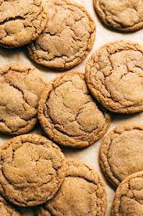

Big Soft Ginger Cookies

Big, Soft, Ginger Cookies
These gingerbread cookies are made with molasses, ginger, and other spices. These cookies are rolled in sugar after baking making them extra delicious. Store cooled cookies in an airtight container and they will stay soft for days. Enjoy!
Ingredients
- 2 Tablespoons white sugar
- 2 1/4 cups all-purpose flour
- 2 teaspoons ground ginger
- 1 teaspoon baking soda
- 3/4 teaspoon ground cinnamon
- 1/2 teaspoon ground clove
- 1/4 teaspoon salt
- 3/4 cup butter or margarine, softened
- 1 cup white sugar
- 1 large egg
- 1/4 cup molasses
- 1 Tablespoon water
Steps
- Preheat the oven to 350 degrees F (175 degrees C). Set 2 tablespoons sugar in a small bowl; set aside.
- Sift together flour, ginger, baking soda, cinnamon, cloves, and salt in a bowl.
- Beat butter and remaining 1 cup sugar in a large bowl with an electric mixer until light and fluffy. Beat in egg, then stir in molasses and water. Gradually stir the sifted ingredients into the molasses mixture until well combined.
- Use floured hands to shape dough into 24 walnut-sized balls. Roll each ball in the reserved sugar until coated. Place cookies 2 inches apart onto ungreased cookie sheets, and flatten slightly with the bottom of a glass.
- Bake in the preheated oven for 8 to 10 minutes, switching racks halfway through.
- Remove from the oven and allow cookies to cool on the baking sheets for 5 minutes, then transfer to a wire rack to cool completely.
- Enjoy with a glass of cold milk!